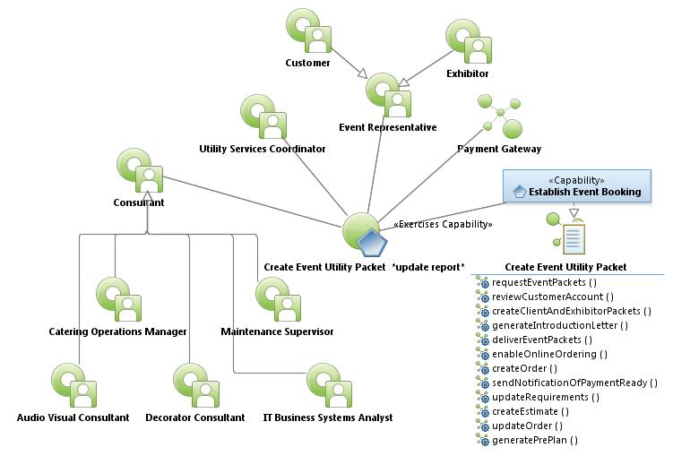
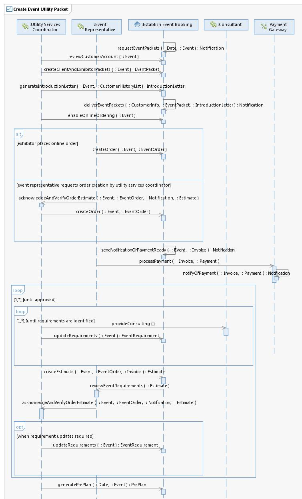

|
Create Event Utility Packet Use Case Specifications
Select to enlarge...

Create Event Utility Packet Use Case Model
|
Scope: The Utility Services Coordinator receives a trace
(activity) Notification from the system 3-6 months prior to an Event
with a reminder to use the system to create an Event and associated
Client Packet and Exhibitor Packet with a Cover Letter as a PDF
document and email it to the Client. The Utility Services Coordinator
uses the system to examine event specifics and notes the Contract ID
for the Event. The Client Packet has a select amount of utility
services that are not included on the Exhibitor Packet and vice versa.
The Utility Services Coordinator uses the system to enable the Event
for Online Ordering. Online Ordering is a Web-based portal allowing the
Event Representative to order and pay for their desired utility
services for a specific Event. Both Client and Exhibit Packets include
utility services with three pricing levels to include incentive,
standard and floor rate. The incentive rate applies to utility services
ordered by the incentive deadline date. Standard rate is the standard
price for the utility services. Floor rate charged for utility services
ordered during the Event. The Utility Services Coordinator communicates
directly with the Event Representative regarding their needs, answering
questions, etc. Within 30 days, the Utility Services Coordinator sends
the Client an estimate for their requested utility services. Within 7
days of the event, the Utility Services Coordinator creates a utility
Pre-Plan. The Client and Consultants (i.e., Audio Video Consultant,
Decorator Consultant, Catering Operations Manager, etc.) provide floor
diagrams with desired electrical and technical services indicated with
exact locations and are included in the utility Pre-Plan. The Event
Services Coordinator emails the utility Pre-Plan to Maintenance
Supervisor and IT Business Systems Analyst. The system provides a Web
portal by which external partners (Audio Video Consultant and Decorator
Consultant, parking, and Catering Operations Manager, etc.) can examine
details associated with the event and provide feedback to the Event
Coordinator at any time. This provides a more global view of resources
required for multiple events.
Select to enlarge...

Create Event Utility Packet Sequence Diagram
|
Table of Interface Descriptions
| Type/Interface | Description |
|---|
FS017
Establish Event Booking/
requestEventPackets |
3-6 months prior to an Event, the system sends a Notification to
the Utility Services Coordinator instructing them to create Event
Packets for the Client and the Exhibitor, providing the contract ID,
event name, space, notes from sales, etc. The system requests Utility
Services Coordinator to verify auto-reassigned traces. |
FS018
Establish Event Booking/
reviewCustomerAccount |
The Utility Services Coordinator uses the system to review type of
event, dates, space, booking notes, and contract clauses for accuracy.
The system allows the Utility Services Coordinator to make changes as
necessary, recording who made the change, the date the change was made
and by whom. |
FS019
Establish Event Booking/
createClientAndExhibitorPackets |
The Utility Services Coordinator uses the System to create the
Client and Exhibitor Packets based on templates. Event Packets include
the following: (1) cover letter (client name, contract ID, event name,
show dates, move in/out dates, discount rate deadlines, standard rate
deadlines, floor rate applicable date, contact information for Austin
Convention Center, name and contact information of utility services
coordinator), (2) Table of contents, (3) List of all products and
services unique to client and exhibitor (telephone, electrical,
technology). To include standard pricing incentive and floor pricing,
(4) Exhibitor booth diagram, (5) Order form, (6) Installation notice,
(7) Wifi guidelines, (8) Policies and procedures for electrical, (9)
Service yard and entry rules, (10) Fire regulations, (11) Booth
security services and procedures, (12) Booth security order form, (13)
Catering menu - booth catering order form - guideline for sample food
and beverage. |
FS020
Establish Event Booking/
generateIntroductionLetter |
The Utility Services Coordinator uses the system to draft an
Introduction Letter from an introduction template. The letter welcomes
the client to the Austin Convention Center or Palmer Event Center
(note: the system provides a mechanism for different templates allowing
alternate letters based on situation). The letter lists the Utility
Services Coordinator's name, the event name and dates, deadline
information, details relative to event (person referred, first event,
if repeat event letter contains information on previous event
services), and link to online ordering. Attached to the Introduction
Letter are previous invoices for past events, Client and Exhibitor
Packets. |
FS021
Establish Event Booking/
deliverEventPackets |
The system sends the Introduction Letter, Event Packet, and Attachments to the Event Representative via email. |
FS022
Establish Event Booking/
enableOnlineOrdering |
The Utility Services Coordinator uses the system to enable online
ordering for the Event. Online ordering allows Clients and Exhibitors
the ability to choose from a reduced list of services via a web order
form and process credit card payment for that order. |
FS023
Establish Event Booking/
createOrder |
The Event Representative uses the online order feature of the
system to create their event services order or return packet with
requested requirements. If using the online order, the Event
Representative picks the Event Name. The Event Representative enters
their name, company name, address, booth number, telephone numbers,
email address, services they wish to order, and attaches a scanned
booth diagram with annotations. If the Event Representative returns the
Packet the Utility Services Coordinator uses the system to create the
order and enters the Event Representative name, company name, address,
booth number, telephone numbers, email address, services they wish to
order, and attaches a scanned booth diagram with annotations. |
Utility Services Coordinator/
acknowledgeAndVerifyOrderEstimate |
The Event Representative notifies the Utility Services Coordinator
via email of their receipt and verification of services listed on
Estimate or Event Order. If the Event Representative does not verify
services on Estimate they include a list of proposed changes or
deletions of services. If the Event Representative verifies the
services on the Estimate, they sign the Estimate. |
FS024
Establish Event Booking/
sendNotificationOfPaymentReady |
The system sends the Event Representative an email notification
informing them their order is ready for payment. The email includes a
copy of the order, total, and a link to a payment gateway. |
Payment Gateway/
processPayment |
The Event Representative reviews customer order, enters their
credit card information (credit card number, expiration date, name as
shown on card, card type, security code, zip code, email address), and
processes the payment for their order. |
Consultant/
provideConsulting |
The Utility Services Coordinator requests Catering Operations
Manager to provide utilities (electrical, telephone, technical, water)
catering requirements for concessions and catering functions for event,
and exhibit booth orders. The Utility Services Coordinator requests
Maintenance Manager to provide consulting regarding utilities
(electrical, telephone, water) requirements. The Utility Services
Coordinator requests Decorator Consultant to provide utilities
(electrical, telephone, technical, water) requirements for event. The
Utility Services Coordinator requests Audio Visual Consultant to
provide utilities (electrical, telephone, technical) requirements. The
Utilities Services Coordinator requests that the IT Business Systems
Analyst provide consulting on utilities (telephone, technical)
requirements for event. |
FS025
Establish Event Booking/
updateRequirements |
The Utility Services Coordinator uses the system to update event
requirements. Event requirements include catering, maintenance, audio
visual, decorating, and information technology as needed. Under some
circumstances, the Utility Services Coordinator uses the system to
update the requirements based on an Estimate. If no changes are
required Utility Services Coordinator uses the system to update
Estimate as approved. |
FS026
Establish Event Booking/
createEstimate |
The Utilities Service Coordinator uses the system to create an
estimate based on the Event Order. The estimate contains all details
procured from internal and external operations experts (Consultant),
all needed utility services (electrical, technical, water, telephone),
pricing schedules, the amount due, and lines for signatures. The system
sends an email notification to the Event Representative. The estimate
is attached to the email. Email requests approval of estimate. |
Event Representative/
reviewEventRequirements |
The Event Representative reviews the Event Requirements. |
FS027
Establish Event Booking/
generatePrePlan |
The Utilities Service Coordinator uses the system to create a
utility Pre-Plan based on the Event Order seven days prior to the
Event. The Pre-Plan contains the following: (1) All details procured
from event representative and internal AND external operations experts,
(2) All needed utility services (electrical, technical, water,
telephone), (3) Move in dates, (4) Move out dates, (5) Diagrams, (6)
Event name, (7) Show dates, (8) All client information, (9) Utility
coordinator and schedule for utility coordinators, service desk, (10)
Exhibitors with booth numbers, requirements, and diagram, (11) Labels,
and (12) Locations of services. |
|
{kind=link}
{kind=link}